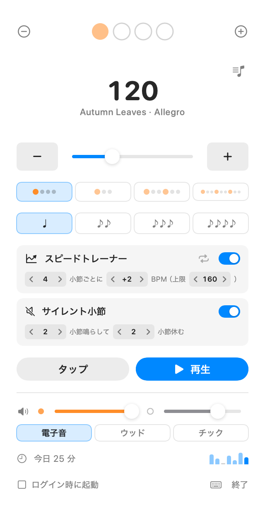

Pulstick
メニューバーに住むメトロノーム。 楽器を構えたまま、すぐ鳴らせます。
macOS 15（Sequoia）以降で動作します

練習に要るものだけを
メニューバーに常駐
Dock には出ず、メニューバーからワンクリックで開けます。再生中はメニューバーに BPM を表示します。再生ボタンを右クリックすれば「15 分で止める」や、弾き始める前の 1 小節のカウントインも設定できます。今日の練習時間と、直近 7 日の小さなグラフを表示します。設定は次回も引き継ぎます。
スピードトレーナーとサイレント小節
ゆっくり始めれば、「4 小節ごとに +2 BPM、160 まで」のようにテンポを自動で上げていきます。次に上がるまでの小節数も表示するので、不意を突かれません。サイレント小節は数小節ごとにクリックを消し、音が戻ったときに拍とずれていないかを確かめられます。
細分化と音色
8 分・3 連・16 分を、拍より控えめな音で刻めます。音色は電子音・ウッド・チックの 3 種類から、楽器の音に埋もれないものを選べます。ミュートして拍の表示だけを見ることもできます。
アクセントと曲リスト
1 小節 16 拍まで、どの拍もアクセントや休みにできます。7/8 の分け方やクラーベ、2・4 拍目だけ鳴らす練習も作れます。曲ごとのテンポと拍子に名前を付けて保存すれば、セットリストをワンクリックで切り替えられ、曲ごとの練習時間と、これまでに弾けた最高テンポも分かります。曲を右クリックすれば、本来のテンポの 80% などから練習を始められます。セットリストはコピーしてバンドのメンバーの Mac に貼り付ければ共有できます。
タップテンポ
音源に合わせて叩けばテンポが分かります。別のアプリで再生していても ⌃⌥T で叩けます。BPM の数字をクリックして直接入力することもでき、Andante などのテンポ記号も表示します。
楽器から手を離さずに
⌃⌥M なら、どのアプリを使っていても再生と停止ができます。ポップオーバーの中ではスペース、矢印キー、1〜4 で操作できます。ボタンやスイッチは VoiceOver で読み上げられ、スピードトレーナーで上がったテンポも読み上げます。SwiftUI 製で、Electron は使っていません。
キーボードショートカット
どのアプリからでも
- ⌃⌥M
- 再生 / 停止
- ⌃⌥T
- タップテンポ
- ⌃⌥, .
- 前の曲 / 次の曲
ポップオーバーの中で
- Space
- 再生 / 停止
- ↑↓
- テンポ ±1（⇧ 併用で ±5）
- T
- タップテンポ
- M
- ミュート切り替え
- S
- スピードトレーナーのオン / オフ
- R
- 開始時のテンポに戻す
- 1–4
- プリセットを選ぶ
- []
- 前の曲 / 次の曲
すぐに使い始められます
ダウンロード
GitHub Releases から最新版の Pulstick.zip を入手します。
インストール
Pulstick.app をアプリケーションフォルダに移します。初回だけ、右クリックして「開く」を選んでください。
起動
メニューバーにメトロノームのアイコンが出たら準備完了です。